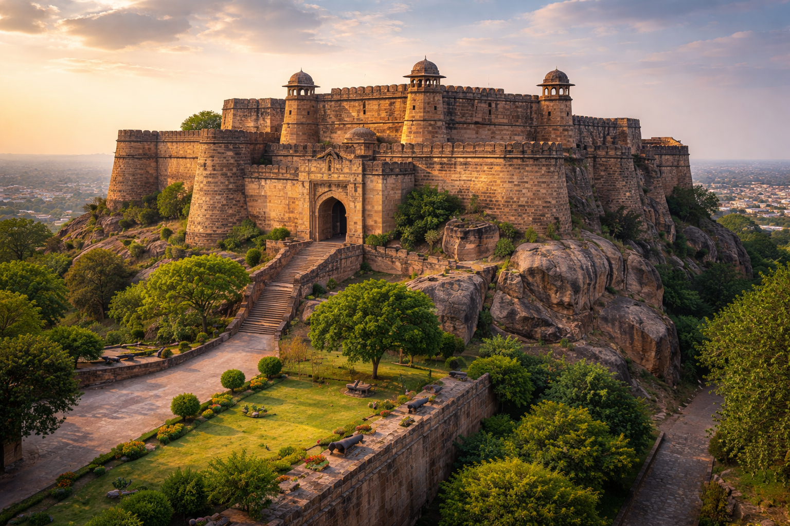

Jhansi Fort is a historic fort where Rani Lakshmibai lived and fought bravely against the British during the Revolt of 1857. Built on a hilltop, the fort provided a strong defense and became a symbol of resistance and courage.

The Stronghold of Courage
Built in the 17th century by Raja Bir Singh Deo
Famous for the spot where Rani Lakshmibai is believed to have jumped with her horse during battle
Offers a panoramic view of the entire city of Jhansi
Became a key center during the Indian Rebellion of 1857